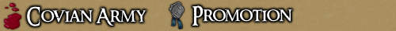

<TABLE BORDER CELLPADDING="0" background="bocimages/scrollbgdark.gif" width="100%">
	<TR>
	<!-- Header or whatever -->
	<BR>
		<TD valign="top" class="notes">
		The Covian Army follows the principle of hard
	      work, great reward. At each level of the Army, Covian guardsmen must ensure
	      that they keep ontop of their day to day duties, and that their ongoing training
	      is maintained. The promotion requirements are listed on <a href="javascript:tale_window('http://cove.sugeworld.com/forum/index.php?topic=11451.0')">tome</a>.
	      <DIV align="center">
		  <br>
		<BR>
		<I><SMALL>Recruit Constantius is promoted to Watchman!</SMALL></I>
	      </DIV>
		  <br>
	      <B>Completing Your Requirements</B><BR>
	      There are a large number of ways you can complete your requirements and remain active in the army. A list of activities than
		  you can perform is stored on the <a href="http://cove.sugeworld.com/forum/index.php?topic=6943.0">Forum</a>.
		  <br>Activity breeds activity, so keep busy and you're sure to rise through the ranks! If you do something impressive that isn't
		  strictly a Guardsman Duty task, you can still get credit for it!
	      <BR>
	      For Cove!<BR>
	      <I>Commander Raiden Morana, <BR>
	      Covian Army &amp; Baronship Council</I><BR>
	      Updated: 04/08/10<BR>
		</TD>
	</TR>
</TABLE>
